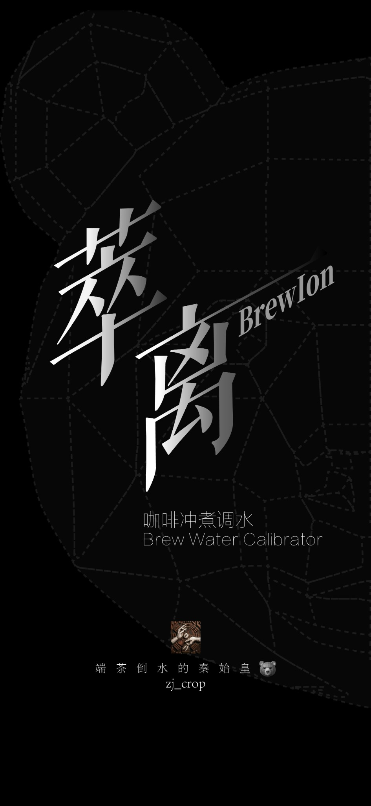
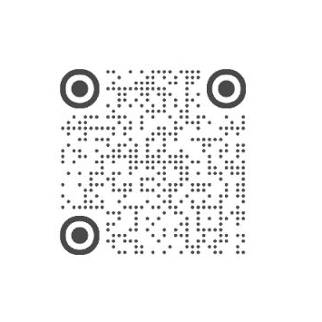

萃离用于咖啡冲煮水复矿、预设方案载入、风味微调、物质用量换算、TDS 预测与风险筛查。所有计算均为配方研究模型，原料化学式、水合状态、纯度与批次数据必须与实际采购物一致。
本版使用完整比例水滴图作为 APP 图标，保留新版启动主页设计图；关于页增加返回按钮，风险页在无中高风险时提供返回方案物质用量区域的快捷按钮。
本工具核心内容为个人编写，仅供咖啡调水研究与个人实验参考。转载、引用或二次传播应提前告知并注明来源。因原料等级、称量误差、包装吸潮或操作顺序不当产生的风险，应由实际使用者重新验证。

账号名：端茶倒水的秦始皇
扫描二维码，可在小红书找到对应主页与内容更新。
扫码可添加个人微信，用于项目咨询与沟通。
请在添加时备注“萃离 / 调水”。